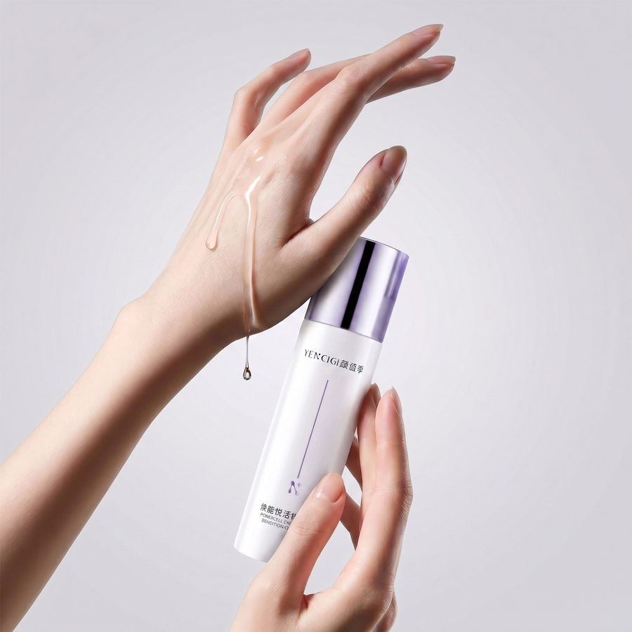

Brand Philosophy
补充细胞间脂质，修护"砖墙结构"，解决干燥脱皮与敏感刺痛。
呵护皮脂膜，维持肌肤弱酸性"保护膜"，提升自身锁水力。
抑制光损伤引发的慢性炎症，安抚过度活跃的免疫细胞，阻断"炎性衰老"。
平衡菌群共生关系，改善外油内干与反复痘痘，强韧肌肤抵抗力。
直击真皮层，激活成纤维细胞，充盈胶原与弹性蛋白，从根源撑起年轻轮廓。
From Cocoon to Cell
它是衣裳，是缝合线，是再生医学里的支架，也是你梳妆台上的一瓶精华。
同一根蚕丝，跨越五千年，走完了从「衣被天下」到「安抚肌肤」的路。
桑蚕丝织，是中国五千年文明的注脚。彼时的丝，是衣裳，是绢帛，是东方递给世界的礼物。
公元 150 年前后，医学文献中已有以蚕丝缝合伤口的记载；1869 年，第一根无菌丝线进入临床。丝，第一次以「线」的身份进入人体。
科学家学会了脱胶、再生与成型——丝素蛋白可以被做成薄膜、凝胶与支架。2000 年代，SERI® 外科支架获 FDA 许可，用于软组织支持与加强；2018 年，SilkVoice® 丝素蛋白注射剂获批用于声带修复。丝，从「缝合组织」走向「引导再生」。
丝素蛋白介导的非炎症、细胞年轻化与 ECM 稳态重建，让皮肤修护抗衰完成了从「治标」到「治本」的跨越。颜植季把再生医学的丝素蛋白技术，转化为日常可用的 MCRF——同一根蚕丝，如今以「蚕丝提取物」之名，写进每一瓶精华的成分表。
PIONEER OF CHINESE SILK FIBROIN MATERIALS
Core Technology
源自再生医学的修护因子。将原本用于组织修复与再生的丝素蛋白技术转化应用于护肤，构建从源头提取到临床转化的全链路技术壁垒。
无炎驱动胶原新生，安全边界高，适合敏感肌与反复修护场景。
与人体组织高度兼容，可完全降解代谢，无残留、无免疫原性。
逆转成纤维细胞衰老、压制 SASP，同时重建细胞外基质稳态。
核心原料自研自产，专为敏感反复人群设计，全场景适配。
先后与浙江大学现代中药所、浙江省组织工程与再生医学技术重点实验室组成单位浙江省医用材料和组织工程重点研究院等科研单位等顶尖科研平台合作，构建从源头提取到临床转化的全链路技术壁垒；现研发单位为浙江省博士后工作站、院士工作站，先后与国内外再生医学研究机构开展长期深度合作。
丝素蛋白基注射填充剂
传统玻尿酸交联度成熟、同质化严重，价格竞争加剧；胶原与 PLLA/PCL 再生材料快速增长，但材料机制与安全性仍存优化空间。
丝素蛋白独特的非炎性再生，支架再生能力在材料特性上远优于市面上现有再生医学材料。采用丝素蛋白与透明质酸复合，调控填充剂降解时间，采用微流控制备微球专利技术，使注射剂量更好把握，流动性更好，更有利于填平皱纹，减少肿胀发生。
同一核心原料 · 两条医学产品线
慢性静脉疾病关键细分领域的创新疗法探索
IPV 通常是慢性静脉疾病（CVD）或慢性静脉功能不全（CVI）整体诊疗市场中的一个关键细分领域。参考 2024 年全球主要地区（美国、欧盟、英国、日本）CVI 整体治疗市场规模约为 21 亿美元；国内 CVD 患者超 1.2 亿，中重度 IPV 患者约 1,600 万。
下肢静脉溃疡（年新发数百万）、复发性静脉曲张、小腿皮肤硬化色素沉着患者，构成 IPV 核心刚需人群。
超声引导射频消融（52%）、泡沫硬化剂 UGFS（24%）、氰基丙烯酸酯医用胶 CAVE（18%）、激光 EVLA（6%）——热损伤、神经损伤、高色素沉着、复发率与费用仍是待解痛点。
以丝素蛋白替代氰基丙烯酸酯医用胶 CAVE，安全，大大减少过敏等不良反应，无需肿胀麻醉，减少热损伤与神经损伤风险，可当日出院。
口腔可注射、可吸收生物水凝胶
三大增长引擎驱动市场扩容。1.种植牙手术量持续攀升，存量市场需求释放。2.GBR骨增量手术成为种植标配，耗材刚需化。3.集采常态化加速高端耗材的国产替代进程。2025年中国市场规模预测(可吸收胶原屏障膜)12.5-13亿元。年复合增长率(CAGR)，远超医疗器械行业平均增速13%-19%。 以丝素蛋白与透明质酸为基材的口腔植入水凝胶，可注射、可吸收，正推进高风险三类医疗器械临床申报——同一种丝素蛋白，正在更广阔的医学场景中落地。
用于口腔骨增量手术 · 与传统胶原膜方案对比


直接凝胶注射，省时省力，不会浪费，时间效益、经济效益明显。
Product Introduction

精华水质地，适合湿敷。调节水油、褪红焕亮，为屏障筑起第一道「防护水盾」。
28 天：经皮水分流失 −39.04% · 光泽度 +47.57% · 红色素 −26.79%
MCRF · 海藻糖 · 马齿苋 · 库拉索芦荟 · 透明质酸钠
150ml / 瓶 · 避光玻璃瓶 ¥159
查看详情
冰淇淋质地，一抹化水。1 小时极速修护，28 天卓效改善皮肤屏障。
1 小时屏障改善 +36.52% · 28 天 +46.72% · 光泽度 +49.56%
MCRF · β-葡聚糖 · 积雪草 · 光果甘草 · 牛油果树果脂
120ml / 瓶 · 按压泵避光玻璃瓶 ¥189
查看详情
奶白乳霜冰淇淋质地，如丝绸般丝滑。28 天四阶段强韧，淡纹紧致。
14 天：法令纹 −33.78% · 眼角纹 −48.77% · 下颌线 +5.38%
MCRF · 玻色因 · 红没药醇 · 依克多因 · 角鲨烷
50g / 瓶 · 真空按压瓶 ¥249
查看详情
水感质地瞬渗透，不粘腻。第二代 Pro——刷酸、早 C 晚 A 的「万能打底」。
弹性蛋白酶抑制率 51.94% · 四重屏障 + ECM 深层支持
MCRF · 3 重神经酰胺 · B5 泛醇 · 依克多因 · 海茴香
30ml / 瓶 · 按压泵避光玻璃瓶 ¥219
查看详情
云感慕斯 Q 弹质地。真氨基酸洁面，洗卸护三合一，不拔干不假滑。
双重氨基酸表活 · 洗卸护三合一 · 4 重透明质酸钠
MCRF · 椰油酰谷氨酸二钠 · 甲基椰油酰基牛磺酸钠 · 积雪草 · 马齿苋
150ml / 瓶 · 含替换装 ¥109
查看详情
「水裹面膜」凝胶感植物膜布，不流不粘不反渗。润 · 修 · 稳 · 亮四维养肤。
30ml 凝胶精华 · 干敏急救 · 医美术后可用
MCRF · 甜菜碱 · 尿囊素 · 乳酸杆菌发酵产物滤液 · 胀果甘草
30ml × 5 片 / 盒 ¥129
查看详情点击任意产品，进入产品详情页——质地、功效、配方与使用方法。
Product Films
滚动到画面即可自动播放，全程默认静音。
Official Channels
在天猫、京东、抖音、小红书与拼多多搜索「颜植季」，都可以找到我们。
品牌日常、护肤手记与用户真实反馈。
访问主页 →官方正品，全系列产品同步在售。
进入店铺 →官方正品，物流与售后同步保障。
进入店铺 →微信搜索「颜植季」，即可进入官方小程序。
微信内搜索访问全系列 无酒精 · 无香精 · 无防腐剂
敏感肌放心使用 —— 溯源修护，温和抗老。